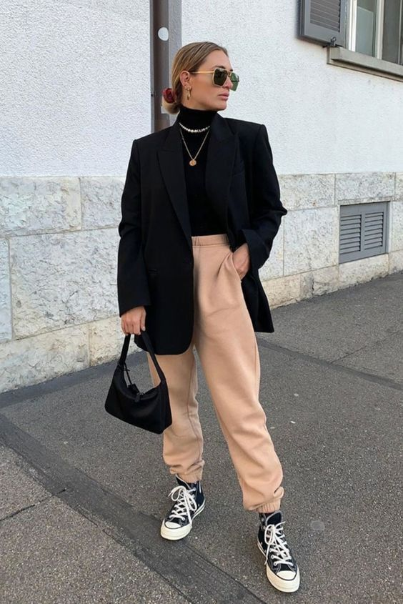
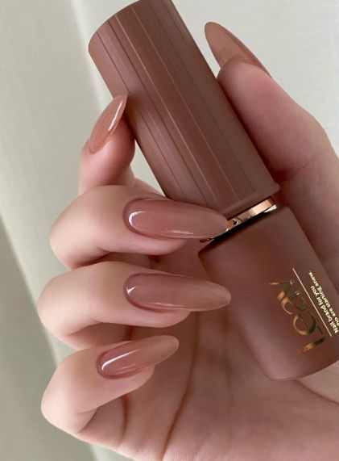

Para hoje:
Look para o frio
Uma das peças para apostar no frio, é a calça de moletom.
Por muito tempo foi vista como uma peça para ficar apenas em casa,
mas com o passar dos anos, percebeu-se que é uma peça super versátil e torna-se elegante com a combinação certa.
Adicionamos acessórios, podemos usar com tênis confortáveis, botas ou até mesmo apostar num salto.
Unhas elegantes

Esmaltes indicados para a esmaltação:
Risque, "Bege eu me beija";
"Linda, leve e nude";
"Terracota que provoca";
"Tom do meu tom";
"Brilho, brilho meu".